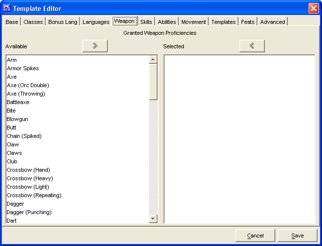

The Weapons Tab is used to add a Granted Weapon Proficiencies for the Template being created.
The two Granted Weapon Proficiencies windows, Available and Selected are used to create a list of Granted Weapon Proficiencies.
The Cancel and Save buttons, which appear on every tab, are used to either cancel the Template creation or save it to the customTemplates.lst file.